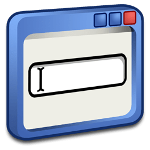

Here are some of my projects:
- NYU fastMRI Project
- AUR Radiology Resident First Year Lectures
- Project 3: Description...
- Clinical Trial Engagement Site
- Sensory Speaking Website | July 2025
Here are some of my projects:
Welcome to my professional digital footprint. I'm glad you could take the time to stop by and check it out.
My name is Matthew Iglody. I am a mid-career professional who has been working in IT since College. The summer after my freshman year, I began interning at Stryker Orthopaedics. I did this for two summers and then worked at school year-round in the construction office.
After graduating college, I got my first job working in hospital IT near the town I grew up in. I was given more responsibility and the team I worked with was great. I was traveling between sites much more after two years and not too long after, got the opportunity to work at NYU Langone Medical Center for the Radiology Department as an IT Analyst.
I was promoted to senior analyst after working roughly two years. Just one year later, COVID-19 hit NYC. Over the next two years, we worked to maintain and update our colleagues' telepresence. Around spring of 2022, NYC felt like it was getting its traffic back. There were more people coming back onsite and policies were changing.
In December of 2022, I got the opportunity to make the switch into Research IT and Clinical trials. I was there for another two years.
You can reach me here:
Background: Teal
Retro-DOS [Version 1.0.0] (c) 2024 Matthew Iglody. All rights reserved. Type 'help' for a list of commands.

Type the name of a program, folder, document, or Internet resource, and Windows will open it for you.